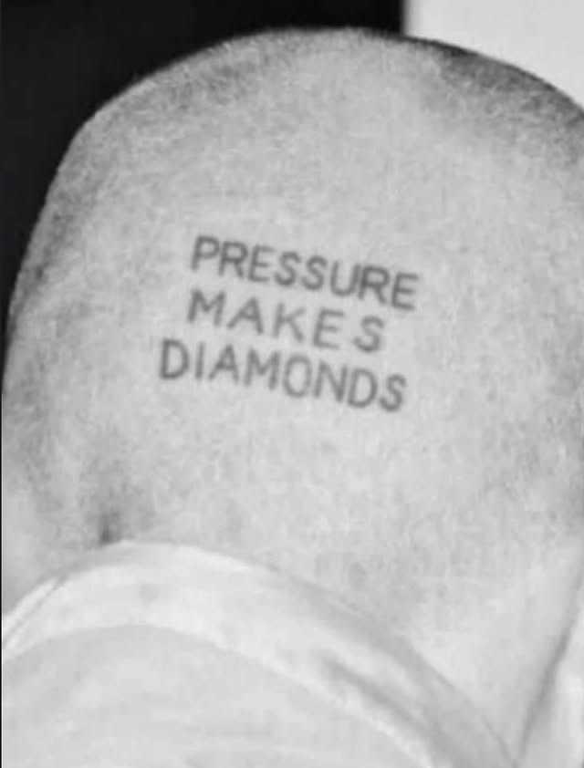

ref01640 × 842 px
Untitled pin
- Visible profile
- Not displayed
- Description observed
- inspiration • Instagram
More Pinterest observations
- Board label
- inspiration • Instagram Pin page
- Pinterest alt text
- This may contain: the back of a man's head with words written on it that says pressure makes diamonds
- AI label
- No AI modified label observed
- Story pin image label
- Not observed
- Pin ID
- 919649186441439379